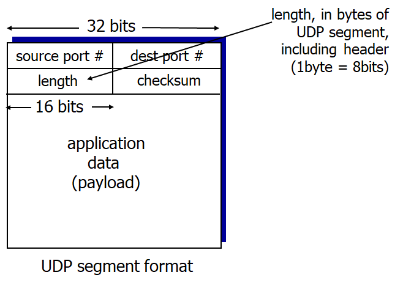

Computer Networking - UDP
Computer-Network-UDP
1. UDP
- “BARE BONES” Protocol
- No extentions
- Almost like IP + DATAGRAM
- “Best effort” service
- UDP segments can be lost
- Delivered as out-of-order
- No hand-shaking between UDP sender and receiver
- each UDP segment handled independently
UDP usages
- Streaming multimedia app
- Timing is important, so fast deliver is required
- Some loss of packets is okay
- DNS
- SNMP
- 간이 망 관리 프로토콜
- 네트워크 관리 및 정보 수집을 위한 표준 프로토콜
Reliable transfer over UDP
- implement yourself at application layer
UDP segment header

- Header size : 8bytes
Why is there a UDP?
- No connection establishment
- No delay for hand-shake
- Simple: No connection state at sender, receiver
- Small header size
- Header size of TCP is 20bytes
- No congestion control
- Can be delivered as fast as desired
UDP Shecksum
- 세그먼트들을 16비트 정수로 간주해서 모두 더해 체크섬을 만듬
- Sender와 Receiver가 각각 체크섬을 계산, 비교해 에러가 있는지 확인
- 체크섬은 헤더의 체크섬 Bit에 탑재되어 전송됨
Goal
- To detect Errors
Sender
- 헤더 필드를 포함한 모든 세그먼트 내용을 16비트 정수로 간주함
- 체크섬: 모든 세그먼트 내용들을 더한 결과
- 1의 보수를 이용
- Sender는 Checksum 결과를 UDP Checksum Field에 넣음
Receiver
- 전달된 세그먼트들의 체크섬을 다시 직접 계산
- 직접 계산한 체크섬이 전달받은 체크섬 값과 동일한지 확인
- NO - error detected
- YES - no error detected… maybe
Example

- 두 세그먼트를 더한다
- 남는 오버플로우된 비트가 있다면 결과값의 제일 하위 비트에 더한다.
- 모든 비트를 Flip한다
- 그럼 체크섬이 된다